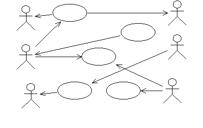

| Рекомендация: Практический семинар по вариантам использования |
 |
|
| Связанные элементы |
|---|
Организация практического семинараПрактический семинар по вариантам использования - это встреча, организуемая для мозгового штурма. Участники должны хорошо ориентироваться в следующих областях знаний:
Это значит, что в группу будут входить люди с разной подготовкой, знаниями и опытом работы. Рекомендуется создавать группы небольшой численности (не более десяти человек), так чтобы половину из них составляли разработчики, а другую половину - представители пользователей. Между ними находится посредник. Посредник должен играть роль ведущего - катализатора всех идей и пожеланий. Оборудование и принадлежностиВам потребуются следующее оборудование и принадлежности:
Определение субъектовПопытайтесь определить, кем или чем будет использоваться система. Сначала начните с реальных людей, которые будут работать с системой; обычно большинству проще сосредоточиться на конкретном, а не на абстрактном. После того как пользователи определены, попытайтесь выяснить, какую роль будет играть пользователь при взаимодействии с системой; обычно роль используется в качестве имени Субъекта. При идентификации субъектов не забудьте создать для каждого краткое описание; обычно это несколько абзацев, описывающих роль, которую субъект играет по отношению системе, и ответственность субъекта. Эта информация пригодится позднее, когда потребуется определить, чего субъект хочет добиться от системы. При определении субъектов не забудьте о других системах, с которыми взаимодействует проектируемая система. В данном случае значок, предусмотренный для субъекта, вводит в заблуждение: кажется, что он подразумевает 'человека', но на самом деле концепция субъекта охватывает также и системы. Сначала попытайтесь идентифицировать "одушевленные" субъекты, поскольку как правило, группе легче начать работать с более привычными понятиями. Не беспокойтесь о структуре Модели вариантов использования или об отношениях между субъектами; просто опишите людей или сущности, которые будут использовать систему. Сфокусируйте внимание на идентификации субъектов и подготовьтесь к тому, что их будет много. В данный момент особо не заботьтесь о фильтрации списка; это будет сделано при идентификации вариантов использования (см. ниже). Административная системаЗадайтесь вопросом: каковы роли в организации, в которой будет использоваться данная система? Для каждой предлагаемой роли нарисуйте фигурку человека и напишите под ней имя. Затем запишите субъекты на доске в двух колонках, по обе стороны от уже нарисованного пятна или значка. Иногда вместо субъекта полезно употреблять слова "роль" или "пользователь". Необходимо ответить на следующие вопросы:
Экземпляр или класс?Вам могут задать вопрос типа: "Почему Том - не субъект? Именно Том всегда делает эту работу." Возможно, вам придется задать несколько вопросов, чтобы понять, какова роль Тома. Имя субъекта должно отражать его роль.
Многих субъектов можно идентифицировать прямо по их должности в организации. Должность в организации может соответствовать нескольким ролям в системе. Например, Том может быть постоянным складским рабочим, а также лицом, ответственным за реорганизацию склада для освобождения места под новые товары. Эти две обязанности могут соответствовать двум разным субъектам системы. Некоторые участники могут быть склонны к чрезмерному обобщению. Они могут предложить Пользователя в качестве субъекта, а затем утверждать, что это единственный субъект, который нужен. Это правильно, но неинтересно, и ничего не добавляет к пониманию системы. Попытайтесь избежать дискуссии по этому предложению, если оно возникнет. Запишите субъект Пользователь на доске и перейдите к следующему субъекту. Секреты мастерства
Определение субъектов обычно занимает от 1 до 4 часов. На доске должен быть список, включающий множество субъектов, но должно остаться место для добавления вариантов использования. Когда набор субъектов покажется законченным, можно начать обсуждение вариантов использования.  Определите варианты использованияСотрите с доски пятно или значок и начните идентификацию вариантов использования. Сосредоточтесь на конкретных вариантах использования и постарайтесь избежать обсуждения отношений включения и расширения. Нарисуйте эллипс и напишите имя для каждого предложенного варианта использования. Нарисуйте стрелки к субъектам. Воспользуйтесь как преимуществом тем фактом, что вы ничего не знаете об их применении. Участники семинара должны сообщить вам, что, по их предположению, должна делать система. Вы должны задать об этой системе множество вопросов. Когда участники предоставят свои объяснения, появятся и варианты использования. Некоторые участники сразу могут понять концепцию вариантов использования, а некоторые - нет. Для того чтобы рассмотреть ее с более простой точки зрения, попросите кого-нибудь изобразить представление системы. Представление системы - это некая абстракция. Например, это может быть сервер с базой данных и несколькими клиентами или несколько монтажных плат, для которых указаны специальные задания. Это представление обычно легко проиллюстрировать: один из участников может взять фломастер и показать, как будет работать система. Представление системы позволяет распространить варианты использования от одной границы системы до другой и неявно указывает на число различных состояний системы. Задайте вопрос об этих состояниях, и появятся еще несколько вариантов использования. Проверьте, что случится, если некоторые связи исчезнут, - это поможет идентифицировать дополнительные потоки в вариантах использования. Часто при работе с технической системой представление системы - это нечто, всем хорошо известное, так что в этом случае представление системы может быть наилучшим способом определения субъектов. Поэтому прежде чем задавать участникам вопросы о субъектах, сначала предложите им нарисовать представление системы. При работе с административной системой представление системы не обязательно очевидно всем участникам. В этом случае более удобным может быть график, иллюстрирующий выполнение операций. Этот график может описывать, каким образом один бизнес-элемент перемещается от одного сотрудника к другому, и что они предполагают с ним делать. Для визуализации процесса заказа и доставки на графике схематически можно изобразить офис заказчика, офис поставщика, склад поставщика и склад заказчика. Убедитесь, что каждому участнику хорошо видны как модель вариантов использования, так и представление системы или представление бизнес-элемента. Для этого удобно использовать две доски. Пусть у вариантов использования будут длинные имена. Имя варианта использования, который идентифицирован последним, может быть длиной с целое предложение. Его можно использовать для создания краткого описания данного варианта использования, а затем это имя можно сократить. Всегда может оказаться несколько несколько вариантов использования с общими частями. Убедитесь, что все участники понимают, что это допустимо. Сейчас бессмысленно структурировать варианты использования, поскольку еще нет достаточной информации о их содержимом. Перед тем как переходить к обсуждению отношений вариантов использования, необходимо дождаться создания схемы потока событий. Как только как группа согласится, что варианты использования, перечисленные на доске, отражают все функции, выполняемые системой, сделайте перерыв на обед. После обеда проанализируйте результаты утренней сессии:
Необходимо ответить на следующие вопросы:
Запишите краткое описание для каждого варианта использованияРассматривайте варианты использования последовательно, один за другим, и для каждого рисуйте диаграмму на отдельном листе ватмана. Нарисуйте эллипс и напишите вверху диаграммы имя варианта использования. Возьмите карандаш и попросите группу помочь вам написать краткое описание варианта использования. Оно должно содержать от одного до трех предложений. Иногда полезно изобразить субъекты, связанные с этим вариантом использования. Оставьте свободное место размером примерно с пол-листа для следующего шага.
Во время этой работы вы обнаружите, что некоторые вещи, которые кажутся очевидными, в действительности ясны не для всех. Обратитесь к требованиям, оформленным в виде ключевых потребностей пользователя и функций в разделе Видение и попытайтесь определить, существуют ли для данного варианта использования какие-либо Требование. Возникнут новые варианты использования, а некоторые исчезнут. Развесьте листы с вариантами использования на стенах. Попытайтесь сгруппировать их так, чтобы столбцы соответствовали функциональным областям. (Не используйте для этого доски, так как они нужны для представления системы, субъектов и вариантов использования.) Если на вопросы невозможно ответить немедленно, запишите их на стикере и наклейте на соответствующий вариант использования. Используйте для вопросов стикеры одного цвета. Когда для всех вариантов использования на листах ватмана будут нарисованы схемы с кратким описанием, можно переходить к следующему этапу. Однако, можно потратить некоторое время на обсуждение того, действительно ли найдены все необходимые варианты использования. Модель, созданную к этому моменту, можно задокументировать в Rational Rose или Rational RequisitePro и создать для нее отчет Акт осмотра и экспертизы модели вариантов использования. Пошаговое описание потока событий для каждого варианта использованияДля того чтобы приступить к написанию варианта использования, сначала необходимо структурировать его текст. Нет смысла сидеть в одиночестве и пытаться структурировать текст, не получив предварительно вводную информацию от заинтересованных лиц. Рассмотрите варианты использования один за другим. Запишите по порядку различные действия. Не пытайтесь определить, как разные вещи будут выглядеть в конструкциях кода, циклах, операторах for-while и т.д.; работайте только с основным потоком событий, не заботясь об альтернативах. Пронумеруйте шаги (1, 2, 3, 4, ...). Для того чтобы помочь группе понять, какова должна быть степень детализации, вы можете сказать, что основной поток событий должен содержать от 5 до 10 шагов. После того как вы придете к согласию относительно шагов в основном потоке событий, проанализируйте их и определите альтернативные шаги. Пронумеруйте альтернативные шаги (A1, A2, A3, A4, ...).
Во время этого обсуждения возникнет много вопросов, многие из которых не будут разрешены, пока вы не доберетесь до Анализа и проектирования. Не забывайте записывать их вместе с любыми предположениями, возникающими по ходу дела. Для некоторых из этих вопросов необходимо быстро найти ответы, чтобы Ответственный за спецификацию требований мог правильно детализировать поток событий, а другие вопросы необходимо разрешить до того, как вы перейдете к этапу Анализ и проектирование. Информации, содержащейся теперь на листах ватмана, должно быть достаточно для того, чтобы ответственный за спецификацию требования мог детализировать поток событий варианта использования. Сформулируйте дополнительные спецификацииВо время этой сессии возникнет несколько требований к системе, которые нелегко сформулировать в рамках варианта использования. Обычно эти заявления относятся к общей функциональности, удобству работы, надежности, производительности и возможности поддержки системы. Закрепите на отдельном пюпитре лист ватмана, на котором вы будете записывать эти требования. Они образуют основу для дополнительных спецификаций. Проследите связь требований с вариантами использованияПросмотрите список ключевых запросов заинтересованного лица и всех функций в документе Видение и проверьте, охватывает ли их модель вариантов использования надлежащим образом. Обсудите, каким именно потребностям пользователей или требований соответствуют различные найденные варианты использования.
Возьмите документ Видение и сначала найдите функцию. Напишите ее идентификатор на одном стикере (или на нескольких, если это необходимо); для того чтобы отличать требования от вопросов, используйте стикеры другого цвета. Наклейте стикер на те варианты использования, которые удовлетворяют этому требованию. Позднее эти соответствия можно добавить в хранилище RequisitePro. Всегда существует несколько требований, которые нельзя связать ни с каким вариантом использования:
Уделите несколько минут виду комнаты: есть ли варианты использования без требований? Почему? Не потому ли, что этот вариант использования не нужен? Или эта функция была забыта тем, кто составлял спецификацию на требования? (Обычно так и происходит.) Эту ситуацию необходимо разрешить. Осведомлен ли заказчик, что ему требуется эта функция? Захочет ли он платить за нее? |

© Copyright IBM Corp. 1987, 2006. Все права защищены.. |